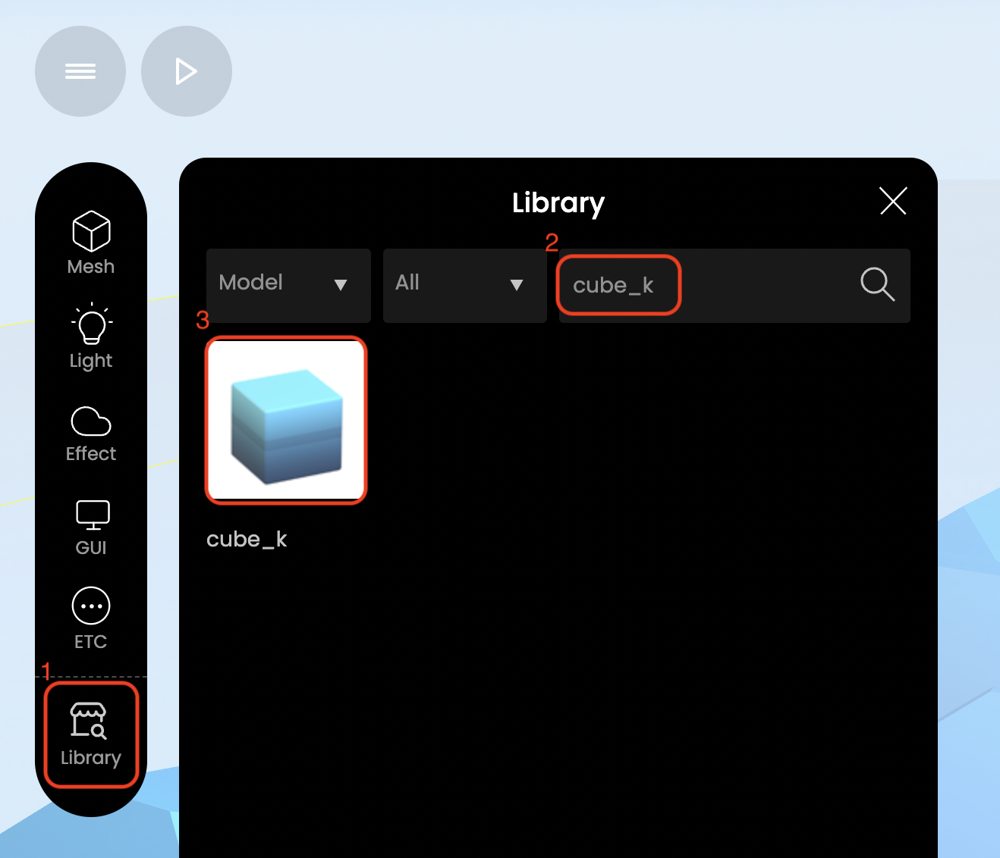
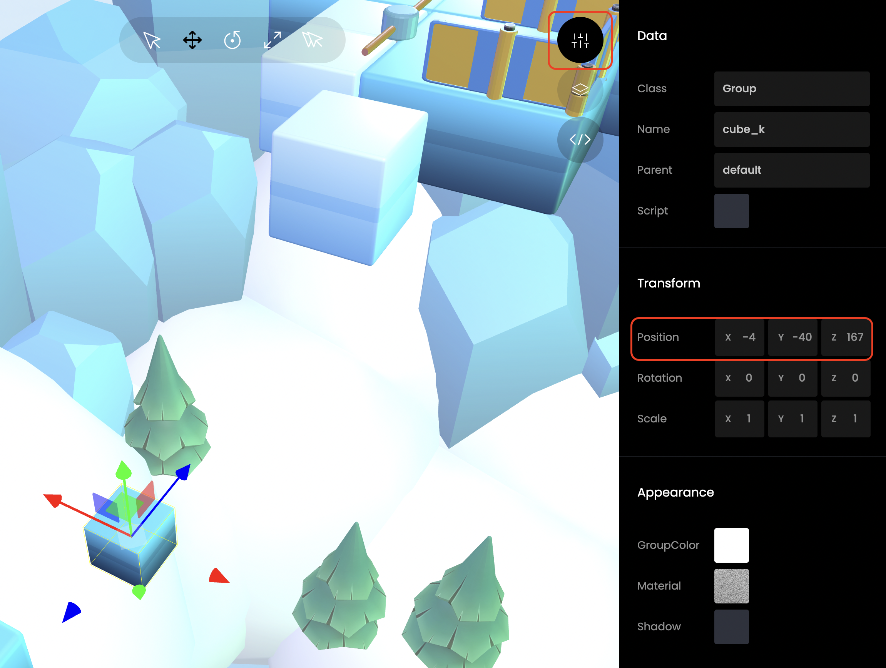
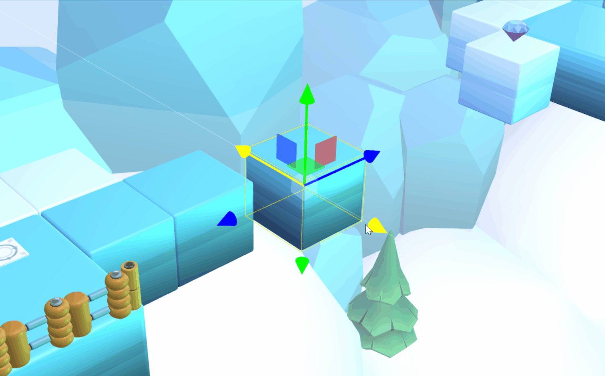
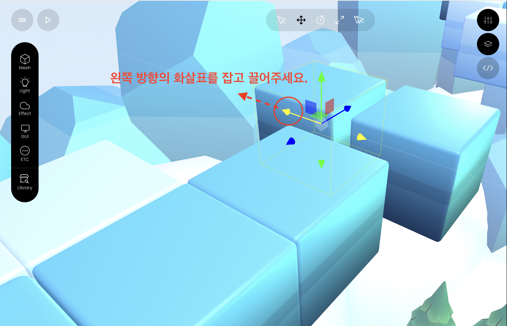
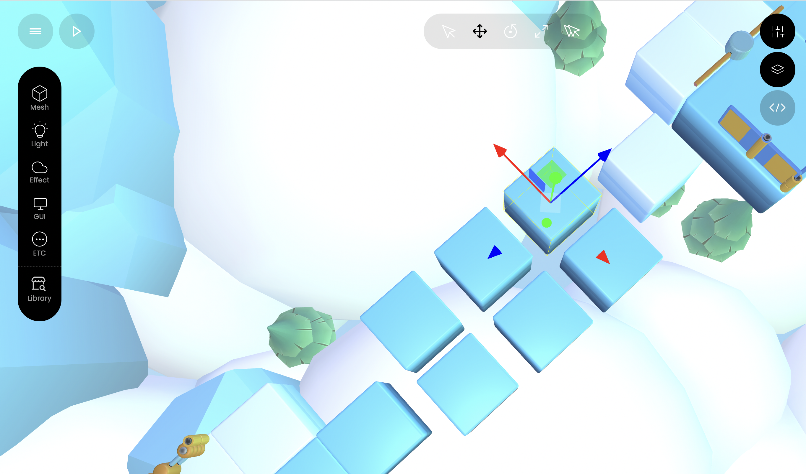

1. 징검다리 역할을 할 큐브를 가져와 보세요.
- Library에서 cube_k를 가져와 보세요.
- 왼쪽 메뉴에서 Library 아이콘을 선택해 보세요.
- 검색 란에 cube_k를 입력해 보세요.
- 나타난 에셋을 선택해 보세요.

2. 큐브를 올바른 위치에 배치시켜 보세요.
- 큐브를 X좌표 -4, Y좌표 -40, Z좌표 167의 위치에 배치시켜
보세요.
- 큐브를 선택한 후 속성 아이콘을 눌러 보세요.
- Transform 영역의 Position 부분에 좌표값을 올바르게 입력해 보세요.

Tip 💡
1️⃣ 3D 환경은 총 3가지의 축을 사용해요.
2️⃣ 속성 탭을 사용하지 않고,화살표를 사용해 직접 끌며 배치시킬 수도 있어요.

3. 큐브의 크기를 조정해 보세요.
- 복사 기능을 사용하여 큐브를 복사해 보세요.
- 에셋 레이어 아이콘을 눌러 새로운 탭을 열어 주세요.
- 아래로 스크롤 하여 하단의 메뉴 버튼을 선택해 주세요.
- Copy 버튼을 선택해 주세요.
- Ctrl+C / Ctrl+V 단축키 사용도 가능합니다 😄

Tip 💡
1️⃣ 복제본은 원본과 동일한 위치에 생성돼요.
2️⃣ 복제본의 위치를 이동시키거나,에셋 레이어 탭에서 복제되었다는 것을 확인할 수 있어요.
복제된 큐브를 배치해 주세요.
-
배치 화살표 중 빨간색 화살표를 사용하여 원본 큐브의 왼쪽에 배치해 보세요.

같은 방식으로 큐브를 복제 및 배치하여 징검다리를 완성해 보세요.

▶ 실행해 볼까요?
완성된 징검다리를 건너 반대편으로 이동해 보세요.
실행 미션을 성공하면, 다음으로 넘어갈 수 있어요!